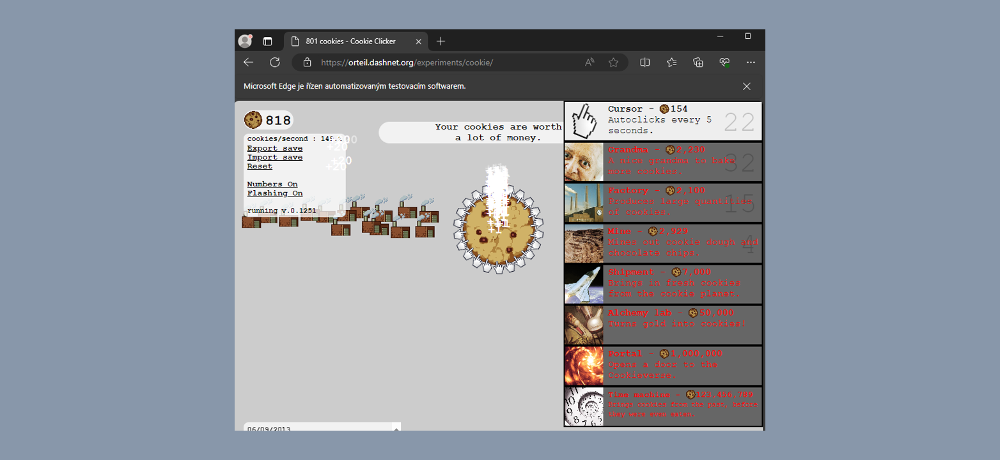

Cookie Clicker
Automation as tool of hackers and bots or helper? There are many ways of using automation. Cookie Clicker automation uses Webdriver by Selenium. Automatically quickly clicks the Cookie, chooses the best available options and helps you to make the biggest cookie universe. What would take you hundreds of years of clicking, will help you this bot achieve in minutes.